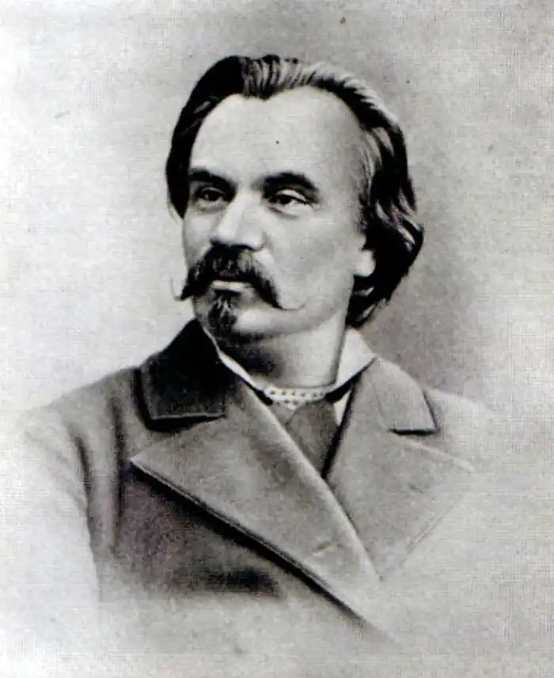
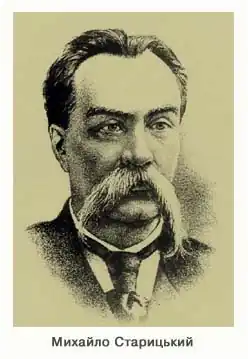
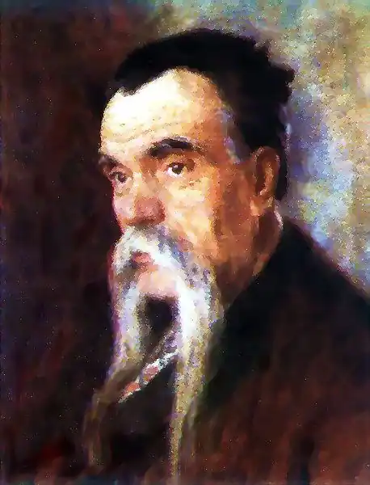

МИХАЙЛО СТАРИЦЬКИЙ
(1840 — 1904)
М. Старицький увійшов в українську літературу як поет, прозаїк, драматург, перекладач, актор, режисер і організатор реалістичного професіонального театру. Михайло Петрович Старицький народився 14 грудня 1840р. у с. Кліщинці Золотоніського повіту на Полтавщині (тепер — Черкаська область) в родині дрібного поміщика. Дитинство серед мальовничої природи, вплив діда — 3. О. Лисенка, колишнього полковника, який брав участь у Вітчизняній війні 1812р. і був для свого часу людиною дуже освіченою, "знав добре французьку мову, зачитувався Вольтером та й у душі був вольтеріанцем", — дали перші імпульси до формування його світогляду. У роки навчання у Полтавській гімназії Старицький залишився круглим сиротою (1852) і відтоді турботи про його виховання взяв на себе двоюрідний брат його матері — В. Р. Лисенко, батько М. В. Лисенка. Разом з М. Лисенком — майбутнім видатним композитором — Старицький часто гостював у родичів, де співали російські та українські народні пісні, думи, читали заборонені вірші Т. Шевченка. Старицький не тільки прилучився до музичної культури, а й мав змогу ознайомитися з вітчизняною і зарубіжною літературою. На цей же час припадає і захоплення Старицького театром; "Наталку Полтавку", "Москаля-чарівника", "Сватання на Гончарівці", що ставилися аматорським гуртком, він і під кінець життя згадував як найкраще з усього ним баченого. На час навчання в Харківському (1858 — 1859) і Київському (з 1860) університетах М. Старицький і М. Лисенко були вже добре обізнані з сучасною російською та українською літературою. До цього періоду належать перші оригінальні вірші та переклади Старицького українською мовою творів Крилова, Пушкіна, Лєрмонтова, Огарьова, Міцкевича, Байрона, Гейне, а також перші спроби драматургічної творчості: лібретто опери "Гаркуша" за п'єсою О. Стороженка і сатиричної оперети "Андріяшіада". Разом з Лисенком він створює у Києві аматорський гурток, силами якого на вечорі пам'яті Шевченка в лютому 1864р. було показано "Наталку Полтавку". З 1871р. Старицький веде велику громадсько-культурну роботу, організовує разом з Лисенком Товариство українських сценічних акторів, яке давало спектаклі за їх творами (особливим успіхом користувалася музична комедія "Різдвяна ніч" — лібретто Старицького за Гоголем, музика М. Лисенка). Після повернення у 1881р. з-за кордону він видає перші свої поетичні збірки ("З давнього зшитку. Пісні та думи"), п'єси "Як ковбаса та чарка, то минеться й сварка", "Не судилось", переклад трагедії Шекспіра "Гамлет, принц Данський". Значну частину літературної спадщини Старицького складають переробки, які формально цензурній забороні не підлягали. Малосценічні твори Я. Кухаренка "Чорноморський побит на Кубані" та І. Нечуя-Левицького "На Кожум'яках" він перетворив на динамічні комедії "Чорноморці" (1872) і "За двома зайцями" (1883) (до останньої тематично близький оригінальний водевіль Старицького "По-модньому", 1887). Інсценізація творів М. Гоголя ("Тарас Бульба", 1880; "Сорочинський ярмарок", 1883), О. Шабельської ("Ніч під Івана Купала", 1887), І. Крашевського ("Циганка Аза", 1888), Е. Ожешко ("Зимовий вечір", 1888), обробка п'єси Панаса Мирного "Перемудрив" (комедія "Крути, та не перекручуй", 1886), були не механічним пристосуванням їх до сценічних вимог, а творчим переосмисленням. Інколи із запозиченого сюжету виростає цілком оригінальний твір, як, наприклад, драма "Юрко Довбиш" (1888), створена за романом К. Е. Францоза "Боротьба за право". Питання про межі втручання у першоджерело та про авторське право драматурга поставало перед Старицьким і тоді, коли він на основі народних легенд про Марусю Чурай і думи про Марусю Богуславку творив драму "Ой, не ходи, Грицю, та й на вечорниці" (1887), трагедію "Маруся Богуславка" (1897). Серед переробок були й лібретто опер "Тарас Бульба", "Утоплена" та ін.; слід, отже, відзначити плідність зусиль Старицького, який разом з Лисенком сприяв подальшому розвитку української національної опери. 1883 по 1885р. М. Старицький очолює і забезпечує матеріально першу об'єднану українську професійну трупу, створення якої було своєрідним підсумком багаторічних зусиль його в організації театральної справи на Україні. Вистави українського театру, в яких брали участь М. Заньковецька, М. Кропивницький, М. Садовський, П. Саксаганський та інші видатні актори, мали такий успіх, що були заборонені в Києві й усьому генерал-губернаторстві. Але трупа продовжувала працювати й виступала в Житомирі, Одесі, Ростові-на-Дону, Воронежі, Харкові, Кишиньові, інших місцях. Після відокремлення трупи Кропивницького Старицький віддає багато сил роботі з творчою молоддю. В 1887 — 1888 рр. трупа Старицького з успіхом виступає в Москві та Петербурзі, а згодом гастролює у містах Поволжя, у Вільно, Мінську, Тифлісі. Розуміння зв'язку соціальних і національних проблем у визвольній боротьбі українського народу XVII ст. виявив письменник у сповнених трагедійного пафосу, позначених рисами епічності п'єсах "Тарас Бульба" (1881), "Богдан Хмельницький" (1887) (безперечно, пов'язаній із його ж романом-трилогією з часів Хмельниччини) та "Оборона Буші" (1899). У п'єсах Старицького на сучасну тематику — "Зимовий вечір", "Розбите серце" (1891), "У темряві" (1892), "Талан" (1893), "Крест жизни" (1901), — різних за поетикою, позитивним героєм виступає людина, яка бореться проти соціальної несправедливості, за людську гідність, захищає в міру своїх можливостей слабшого. Письменник також тяжіє до драми ідей ібсенівського типу. Своєрідними розвідками в цьому напрямі були його п'єси "Остання ніч" (1899) і "Крест жизни". Своє розуміння ролі й завдань театру в житті суспільства Старицький висловив у доповіді на Першому всеросійському з'їзді сценічних діячів (15 березня 1897р.). Він звернувся до з'їзду з проханням допомогти українському театрові позбутися адміністративних і цензурних утисків. Назвавши цей виступ сміливим і патріотичним, Іван Франко вказав, що завдяки йому з'їзд прийняв ухвалу й заходи, наслідком яких були "значні пільги для театру, в тім числі й для українського, в Росії". Почавши писати п'єси з необхідності, М. Старицький досяг у них високої майстерності і став одним із найвидатніших вітчизняних драматургів; разом з іншими корифеями він надав цьому родові літератури вагомого значення у культурному процесі.